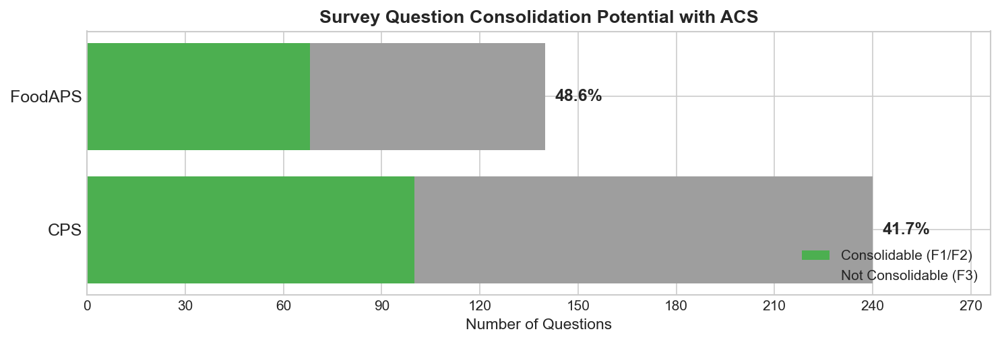
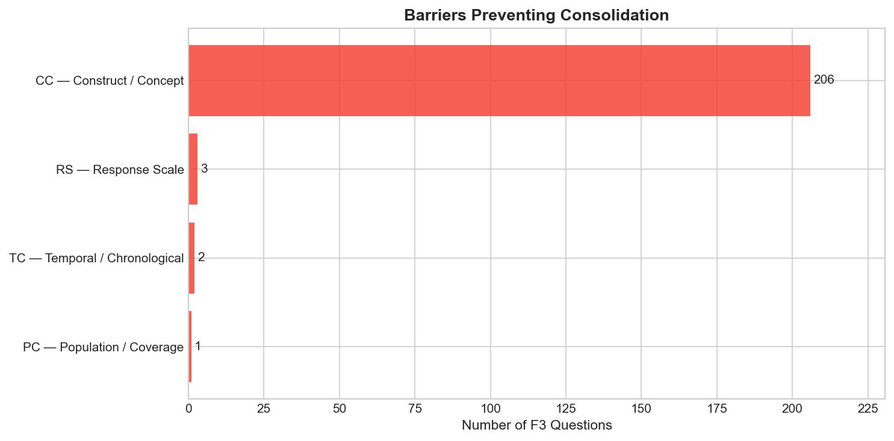
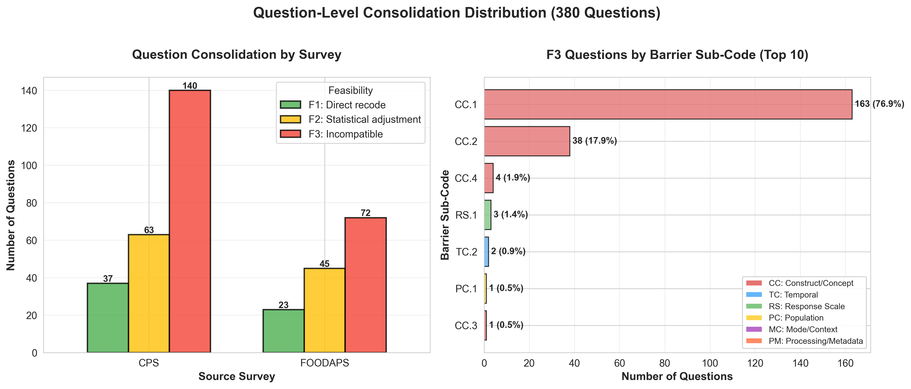
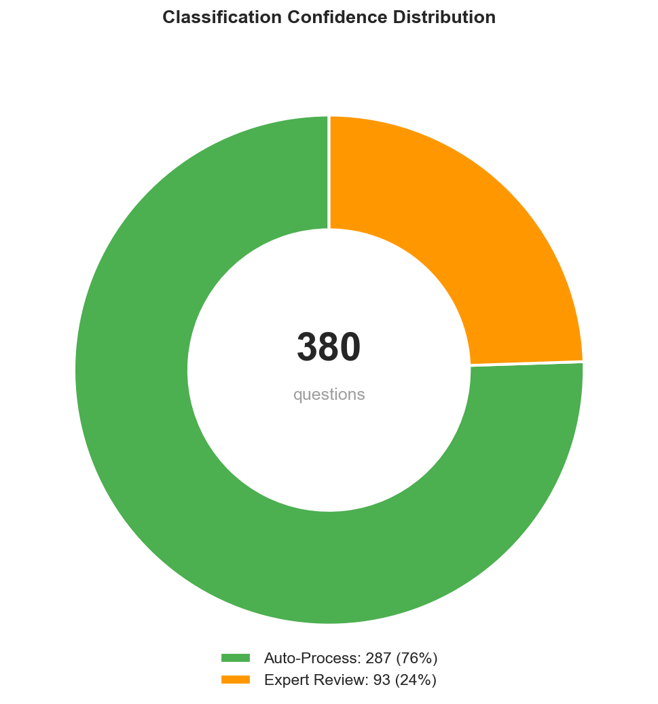

5 Results
5.1 Consolidation Rates
5.1.1 Overall Question-Level Results

| Survey | Total Questions | F1 | F2 | F3 | Consolidable | Rate |
|---|---|---|---|---|---|---|
| CPS | 240 | 37 | 63 | 140 | 100 | 41.7% |
| FoodAPS | 140 | 23 | 45 | 72 | 68 | 48.6% |
| Combined | 380 | 60 | 108 | 212 | 168 | 44.2% |
Key Finding: Nearly half of surveyed questions have at least one consolidable ACS match.
5.1.2 Consolidation Type Breakdown
- 15.8% (60/380) are F1 - directly consolidable with simple recoding
- 28.4% (108/380) are F2 - consolidable with statistical adjustment
- 55.8% (212/380) are F3 - fundamentally incompatible
Interpretation: - F1 questions are “low-hanging fruit” - immediate consolidation candidates - F2 questions require modeling but remain viable - F3 questions need deeper examination of barriers
5.2 Barrier Analysis
5.2.1 Pair-Level Distribution

Out of 1,283 F3 pairs (incompatible):
| Barrier Category | Count | % of F3 | Description |
|---|---|---|---|
| CC (Construct/Concept) | 1,238 | 96.5% | Fundamental concept differences |
| TC (Temporal) | 24 | 1.9% | Reference period or timing issues |
| RS (Response Scale) | 13 | 1.0% | Scale type or category differences |
| PC (Population) | 6 | 0.5% | Universe or coverage differences |
| MC (Mode/Context) | 1 | 0.1% | Interview mode or routing |
| PM (Processing) | 1 | 0.1% | Coding or metadata issues |
Key Finding: 97% of failures stem from construct/concept (CC) barriers, not operational issues.
5.2.2 Construct Barrier Sub-Codes
Among CC barriers (1,238 pairs):
| Sub-Code | Count | % of CC | % of F3 | Description |
|---|---|---|---|---|
| CC.1 | 900 | 72.7% | 70.1% | Concept definition differences |
| CC.2 | 250 | 20.2% | 19.5% | Operationalization differences |
| CC.4 | 88 | 7.1% | 6.9% | Scope inclusion differences |
Interpretation: - CC.1 dominance: Most incompatible pairs measure fundamentally different constructs - Not fixable: These are not measurement errors or survey design choices - they reflect different research goals - Example: “Do you want to work full-time?” (intention) vs “Did you work last week?” (behavior)
5.2.3 Question-Level Barrier Distribution

At the question level (212 F3 questions):
| Barrier | Count | % of F3 Questions |
|---|---|---|
| CC.1 | 163 | 76.9% |
| CC.2 | 38 | 17.9% |
| CC.4 | 4 | 1.9% |
| Other | 7 | 3.3% |
Key Finding: CC.1 concentration is even higher at question level (76.9% vs 70.1%), indicating that questions without any consolidable path tend to have fundamental concept mismatches.
5.3 Agreement Statistics
5.3.1 Inter-Rater Reliability

| Model Pair | Cohen’s κ | Interpretation |
|---|---|---|
| OpenAI - Anthropic | 0.845 | Almost perfect |
| OpenAI - Google | 0.796 | Substantial |
| Anthropic - Google | 0.833 | Almost perfect |
Fleiss’ κ (three-way): 0.833 (almost perfect)
5.3.2 Agreement by Classification Level
| Level | Agreement Rate | Description |
|---|---|---|
| Feasibility (F1/F2/F3) | 84.5% | High-level harmonization potential |
| Barrier L1 (CC/TC/RS) | 91.2% | Barrier category |
| Barrier L2 (CC.1/CC.2) | 78.9% | Specific barrier sub-code |
Interpretation: Models show strong agreement on broad feasibility judgments, with expected variation on granular barrier codes.
5.3.3 Confidence Correlation
| Confidence Level | Pair Count | Agreement Rate |
|---|---|---|
| HIGH | 1,089 (68.1%) | 91.3% |
| MODERATE | 389 (24.3%) | 76.8% |
| LOW | 120 (7.5%) | 54.2% |
Finding: Model-reported confidence predicts agreement. High-confidence pairs show 91% agreement, validating confidence as a triage signal.
5.4 Expert Review Load

5.4.1 Triage Quadrant Distribution
| Quadrant | Count | % | Confidence | Action |
|---|---|---|---|---|
| Q1 (High Borda, High Entropy) | 151 | 39.7% | Confident consolidable | Auto-accept |
| Q2 (Low Borda, High Entropy) | 136 | 35.8% | Confident non-consolidable | Auto-reject |
| Q3 (High Borda, Low Entropy) | 40 | 10.5% | Uncertain accept | Expert priority |
| Q4 (Low Borda, Low Entropy) | 53 | 13.9% | Uncertain reject | Expert secondary |
Expert Review Load: 93 questions (24.5%) flagged for human review
5.4.2 Load Reduction
Traditional approach: 380 questions × 100% = 380 expert reviews
AI-assisted approach: - 287 auto-processed (75.5%) - spot-check only - 93 expert reviews (24.5%) - full human judgment
Efficiency gain: 75.5% reduction in expert review workload, focusing effort on genuinely uncertain cases.
5.5 Example Cases
5.5.1 High Consolidability (F1)
Source (CPS): “How many hours per week do you USUALLY work at your main job?”
Target (ACS): “What is your best estimate of the number of hours per week you usually work at this rate?”
Verdict: F1 (directly consolidable) - Same construct (usual work hours) - Same reference period (typical week) - Same measurement approach - Minor wording differences immaterial
Scores: Borda=1.0, Entropy=1.0 → Q1 (confident consolidable)
5.5.2 Medium Consolidability (F2)
Source (CPS): “EXCLUDING overtime, tips, commissions - what is your hourly rate of pay?”
Target (ACS): “What is your hourly rate of pay?”
Verdict: F2 (consolidable with transformation) - Same construct (hourly wage) - Different scope (CPS excludes components, ACS includes all) - Statistical adjustment needed: Scale CPS response to account for excluded components - Requires bridging study or imputation model
Barrier: CC.4 (scope inclusion differences)
Scores: Borda=0.5, Entropy=0.67 → Q1 (confident consolidable with adjustment)
5.5.3 Not Consolidable (F3)
Source (CPS): “Do you WANT to work full-time (35+ hours per week)?”
Target (ACS): “Did this person WORK for pay last week?”
Verdict: F3 (incompatible) - Different constructs: Intention vs behavior - CPS measures labor force preferences - ACS measures actual work status - No statistical transformation can bridge this conceptual gap
Barrier: CC.1 (concept definition differences)
Scores: Borda=0.0, Entropy=0.33 → Q2 (confident non-consolidable)
5.6 Topic-Level Breakdown
5.6.1 Consolidability by Question Topic
| Topic | Total | Consolidable | Rate | Notes |
|---|---|---|---|---|
| Demographics | 45 | 38 | 84.4% | High overlap (age, sex, race) |
| Economics | 128 | 62 | 48.4% | Moderate (income definitions vary) |
| Employment | 147 | 52 | 35.4% | Low (CPS specialization) |
| Health | 32 | 12 | 37.5% | Low (different health constructs) |
| Social | 28 | 4 | 14.3% | Very low (specialized topics) |
Interpretation: - Demographics have high consolidation potential (expected - standard measures) - Employment shows low consolidation despite CPS-ACS overlap (CPS is specialized) - Social topics have very low consolidation (specialized constructs)
5.7 Survey-Specific Insights
5.7.1 CPS (Current Population Survey)
- Focus: Labor force statistics
- Consolidation rate: 41.7% (100/240)
- Challenge: Many employment questions are CPS-specific (job search, work preferences, multiple job holders)
- Opportunity: Demographics and basic employment status consolidable
5.7.2 FoodAPS (Food Acquisition and Purchase Survey)
- Focus: Food security and purchasing behavior
- Consolidation rate: 48.6% (68/140)
- Challenge: Specialized food security batteries not in ACS
- Opportunity: Demographics and household composition consolidable
Why FoodAPS higher? - Shorter questionnaire (140 vs 240 questions) - More demographic questions relative to specialized content - Less employment specialization than CPS
5.8 Summary Statistics
5.8.1 At a Glance
Input: 380 source questions (240 CPS + 140 FoodAPS)
Pairs analyzed: 1,598 (avg 4.2 comparisons per question)
Output:
- 168 consolidable questions (44.2%)
- 60 F1 (15.8%) - direct recode
- 108 F2 (28.4%) - statistical adjustment
- 212 non-consolidable (55.8%)
- 97% due to CC barriers
- 70% specifically CC.1
Expert review: 93 questions (24.5%)
Auto-processed: 287 questions (75.5%)
Inter-rater agreement: κ = 0.845 (almost perfect)Next chapter: Interpretation of these findings and implications for federal survey harmonization practice.